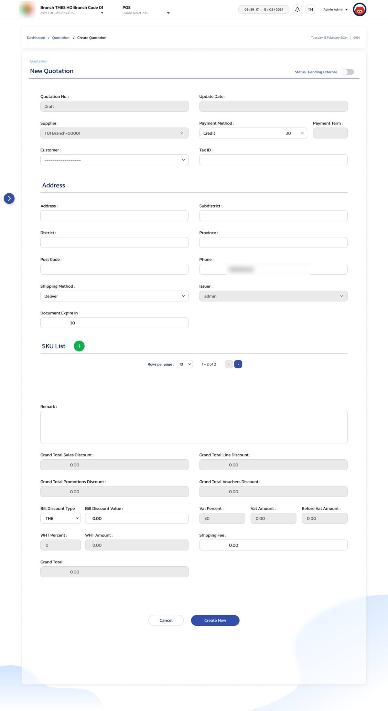
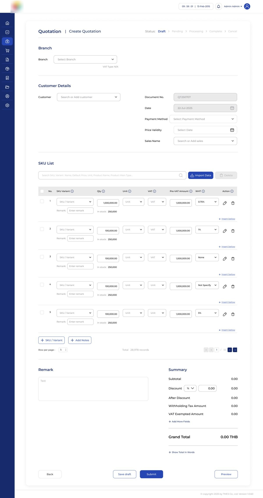
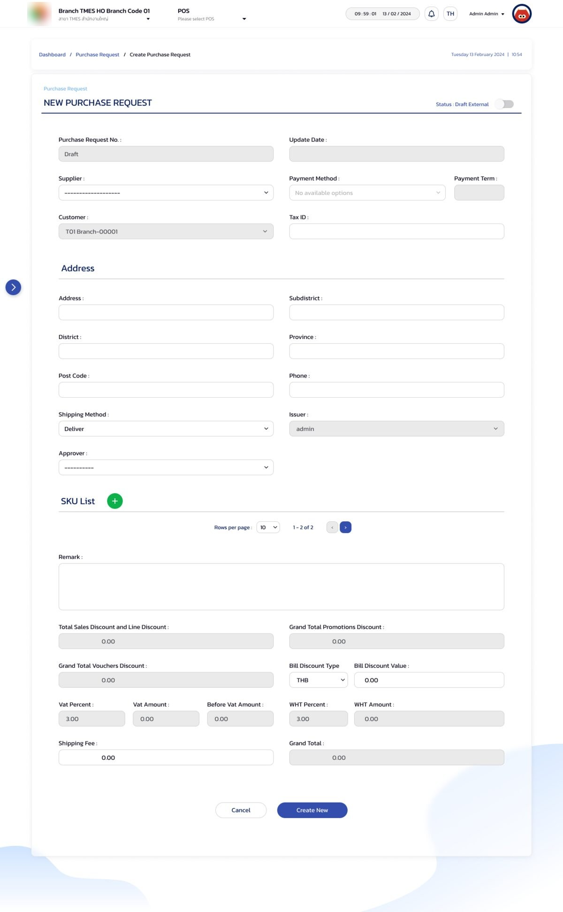
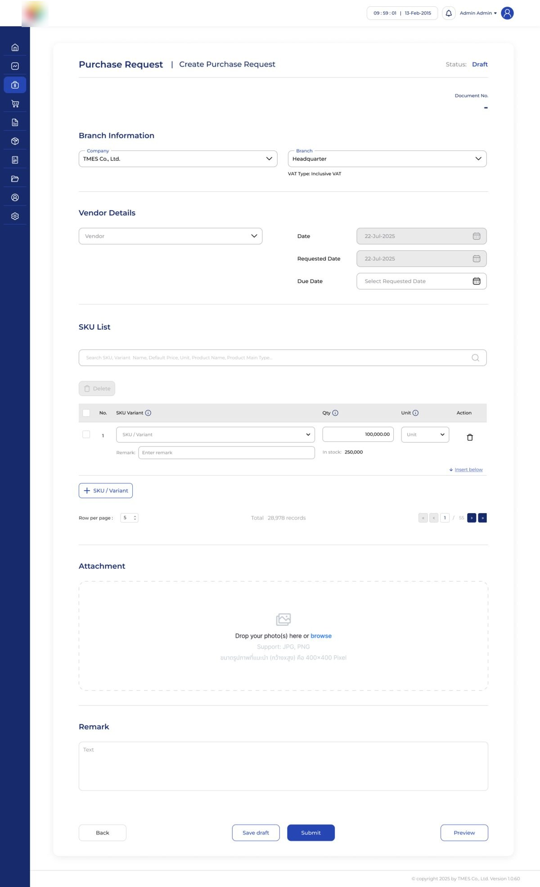
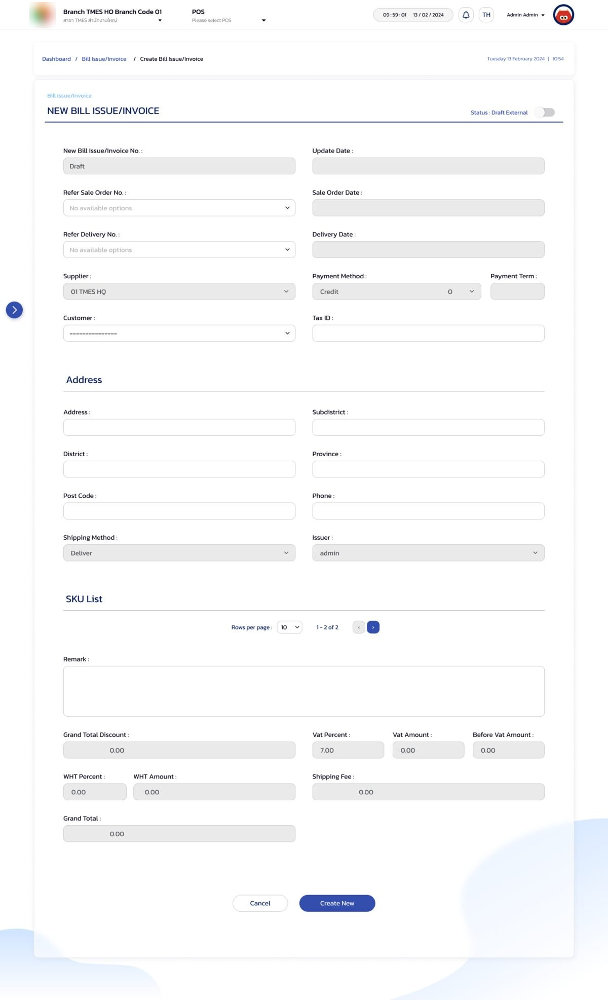
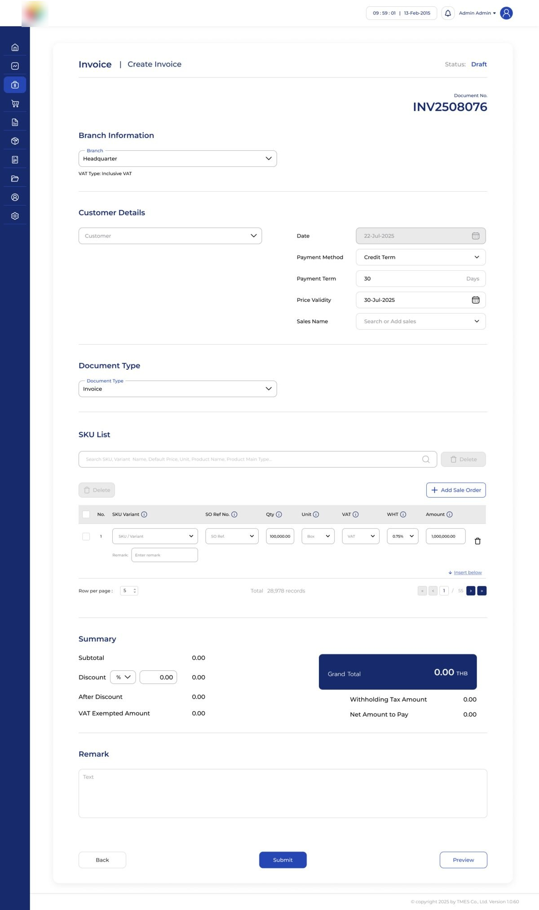

Case Study — 01
BMS Transaction
Redesign
Three of BMS's highest-traffic flows, rebuilt from a one-line brief into a shared pattern every client deployment now inherits.
Brief
The MD's ask arrived at business level: improve the visual design, tighten the UX, and shorten the flow. There was no formal spec and no user research attached. Translating that into concrete design decisions was the actual work.
BMS is a TMES product. This base design ships to client deployments, and each client re-skins it to their own CI, so every decision had to hold up as the foundation they build from.
Design shown is TMES's default CI. Company logo is blurred. Client deployments re-skin colors, logo, and branding to their own identity.
Audit
I walked each existing form screen by screen, separating real business logic from things that were there by habit. Four patterns repeated across all three modules.
Dead ends
The SKU List was a bare pagination bar with no table. Payment Method and Refer Sale Order / Delivery all read "No available options".
Irrelevant fields
The Purchase Request carried a full address block, Customer / Tax ID, and sales-style promotion, voucher and bill-discount fields.
Missing fields
No Requested or Due Date, no attachments, and no way to trace an invoice line back to its sale order.
Flat hierarchy
One long column, a single status toggle, Grand Total blended into the field list, and a two-button footer.
Principles
With no spec to lean on, I turned the audit into four rules the team could check any screen against.
- No dead ends. Every control either works or isn't shown.
- Relevant by default. Show what the document needs; optional fields sit behind "+ Add More Fields".
- Traceable. A line item can be followed back to where it came from.
- Save at any point. Long forms shouldn't be all-or-nothing.
Shared Pattern
All three forms ran on the same skeleton with the same problems. Rather than patch each one, I fixed the skeleton once and applied it to every module.
Header
Document title and status. Quotation uses a five-step stepper.
Sectioned body
Branch, then party details, then SKU List, then Remark and Summary.
One SKU table
A single component with a variant per module (QT / PR / INV).
Action bar
Back, Submit, Preview. Save draft on Quotation and PR.
Quotation
The clearest before and after. The old SKU List was a bare pagination control with no table, no search, and no way to add a line item on screen.


- SKU List goes from a bare pagination bar to a searchable, editable table with Import Data and Insert below (28,978 records across 55 pages)
- Status becomes a five-step stepper: Draft, Pending, Processing, Complete, Cancel
- Summary regrouped, with optional fields behind "+ Add More Fields" and a Show Total In Words option
- Save draft and Preview added; the old form only had Cancel and Create New
Purchase Request
The old form carried sales-style fields a purchase request doesn't need, and left a broken Payment Method field visible. The new one drops what doesn't apply and adds what procurement needs.


- Header fields reduced from 16 to 6; the sales-style discount summary (12 fields) removed
- Dead Payment Method field removed
- Requested Date, Due Date and a photo attachment (JPG / PNG) added
- Save draft and Preview added
Invoice
The old form couldn't trace a line back to its sale order: both "Refer" dropdowns sat empty. The new form makes that link explicit and separates what is owed from what is withheld.


- The two empty "Refer" dropdowns become an Add Sale Order action with an SO Ref. No. on every line
- Grand Total gets its own highlighted block, with Withholding Tax Amount and Net Amount to Pay beneath it
Review & Handoff
The MD reviewed and approved the designs. At handoff I walked the dev team through the shared pattern, so each module was built from the same structure instead of three separate forms.
Outcome & Reflection
- The Quotation SKU list became a working table
- Quotation and Purchase Request gained Save draft
- Purchase Request went from 16 header fields and 12 summary fields to 6 and none (counted from the designs)
- Invoice gained line-level traceability to sale orders, plus Net Amount to Pay
What I'd do next. I'd measure time-to-complete with real users and test the shared pattern with people from two client deployments, so the gains are measured, not just counted from the designs.